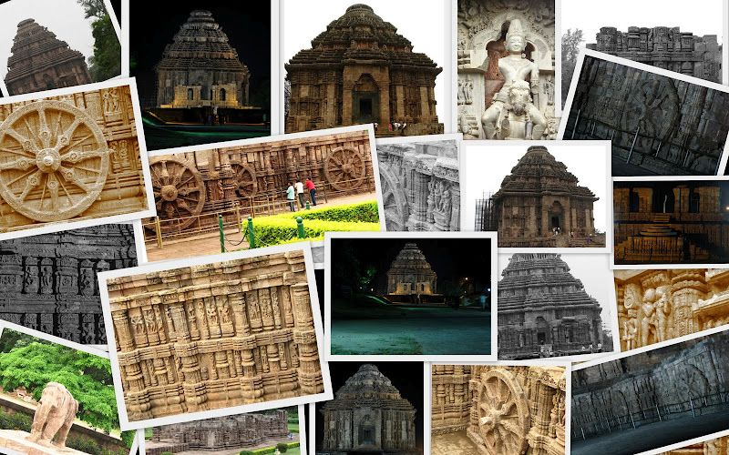
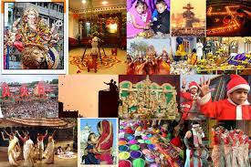

Orissa or now known as odisha is one of the 28 states of India. Located in eastern India, it is surrounded by the states of West Bengal to the northeast, Jharkhand to the north, Chhattisgarh to the west and northwest, and Andhra Pradesh to the south. Odisha has 485 kilometres (301 mi) of coastline along the Bay of Bengal on its east, from Balasore to Ganjam. It is the 8th largest state by area, and the 11th largest by population. The state also has the third largest population of Scheduled Tribes in India. Odia is the official and most widely spoken language, spoken by 36.6 million according to the 2016 Census.
Odisha has a culinary tradition spanning centuries. The kitchen of the Shri Jagannath Temple, Puri is reputed to be the largest in the world, with 1,000 chefs, working around 752 wood-burning clay hearths called chulas, to feed over 10,000 people each day Odissi (Orissi) dance and music are classical art forms. Odissi is the oldest surviving dance form in India on the basis of archaeological evidence.[124] Odissi has a long, unbroken tradition of 2,000 years, and finds mention in the Natyashastra of Bharatamuni, possibly written c. 200 BC. However, the dance form nearly became extinct during the British period, only to be revived after India's independence by a few gurus. The variety of dances includes Ghumura Dance, Chhau dance, Jhumair, Mahari dance, Dalkhai and Gotipua.